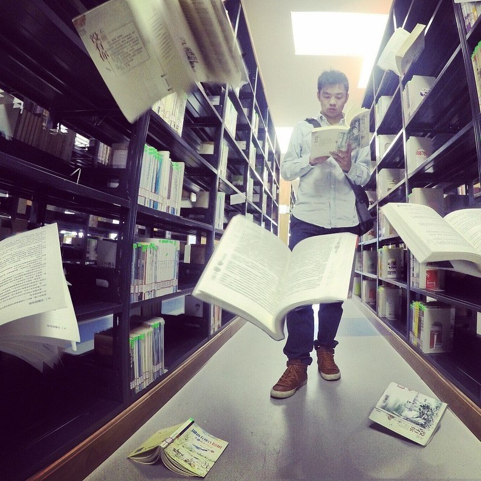

Чем старше становится человечество, тем стремительнее возрастает цена знания. К счастью или к
сожалению, прошли времена, когда люди добывали хлеб с помощью простейших физических
навыков.
Сегодня найти свою дорогу может только тот, кто обладает информацией и знает, как её применить.
О ценности просвещения метафорически рассказывает пословица «Мир освещается солнцем, а
человек знанием».
Когда говорят о том, что человек освещается знанием, имеют в виду животворящую силу науки,
желание развиваться, узнавать новое, бесконечно расширять горизонты собственной жизни.
Как солнце в ясный день озаряет каждую частицу земли и неба, пронизывая мир лучами, так
знание освещает лицо и душу человека.
Сравните изображения людей эпохи палеолита с портретами художников и поэтов эпохи
Возрождения. Безусловно, и те, и другие имели собственные представления о мире, но,
согласитесь, лица Нового времени выглядят по-другому.
Человек отличается от животного тем, что знает, кто такие Пушкин, Эйнштейн, Христос. Он может
по-разному относиться к той информации, которую они принесли в мир, но уже не способен жить
так, как будто великих открытий науки, религии и искусства не существовало.
Дикий человек, выросший в отрыве от культуры, часто не стремится к знанию. Ему достаточно жить
в своём биологическом ритме, плыть по течению: потреблять пищу, обустраивать жилище,
заботиться о продолжении рода и физической безопасности детёнышей.
Других задач такой человек перед собой не ставит. Его жизнь похожа на холодную темницу, куда не
проникает солнечный свет. Не страшно чего-то не знать, страшно – не хотеть знать.
Уместно произнести пословицу «Мир освещается солнцем, а человек знанием» при встрече с
человеком, за короткое время изменившимся у вас на глазах благодаря образованию.
К примеру, в школе парень был хулиганом, говорил и писал с ошибками, а после поступления в
университет, на тот факультет, где учиться стало интересно, научился себя вести, поддерживать
беседу, «пообтесался». Он начал накапливать богатство, уникальные знания, которые отличают его
от всех остальных.
Выражение вполне подойдёт и в качестве благодарности за интересную беседу, хорошо
проведённую лекцию или добрый дружеский совет.
Вместо того, чтобы с гордостью восклицать: «А ты чего вздумал меня учить! Я больше твоего
знаю!», можно с достоинством произнести: «Спасибо за ценные сведения. Без тебя я бы этого не
узнал. Недаром говорят, что мир освещается солнцем, а человек знанием».
Такой «ответ просветлённого» заставит собеседника посмотреть на вас с уважением.
В русском языке имеется множество идиом, напоминающих о величии знания:
Грамотность и начитанность издревле ценилась по всей земле. Иностранцы сложили об этом
колоритные поговорки и пословицы.
У каждого народа найдутся веские аргументы в пользу просвещения. Жить в темноте тяжело и
скучно. Чтобы не покрыться пылью и плесенью, читайте, развивайтесь, знакомьтесь с людьми,
посещайте новые места. Наслаждайтесь светом знания, которое бесконечно!